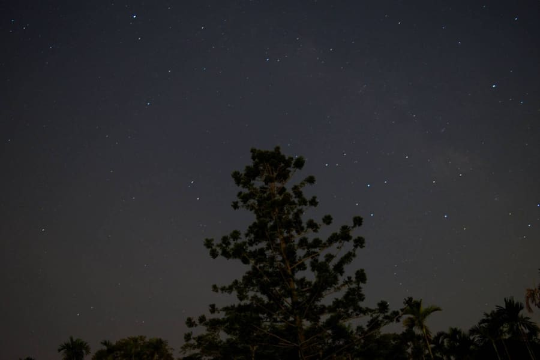
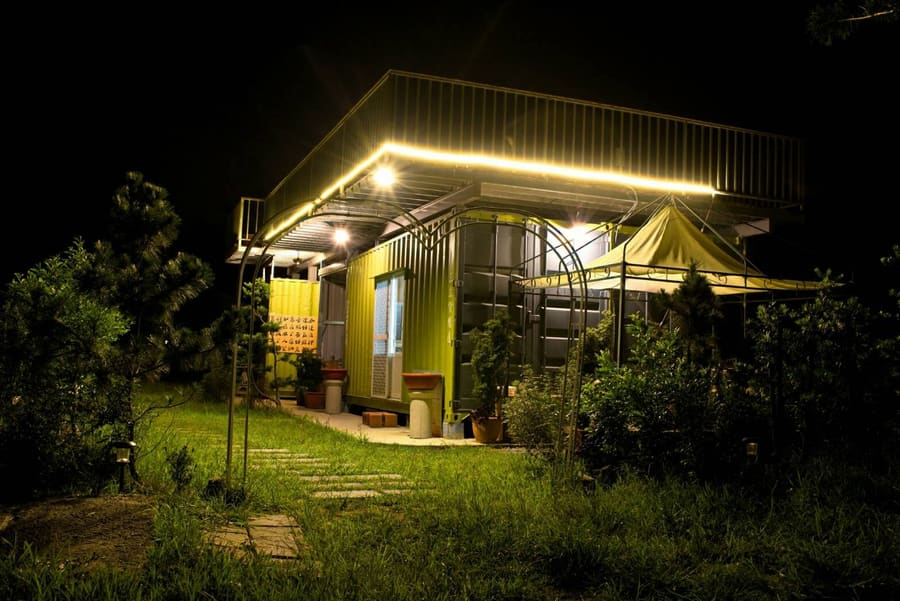
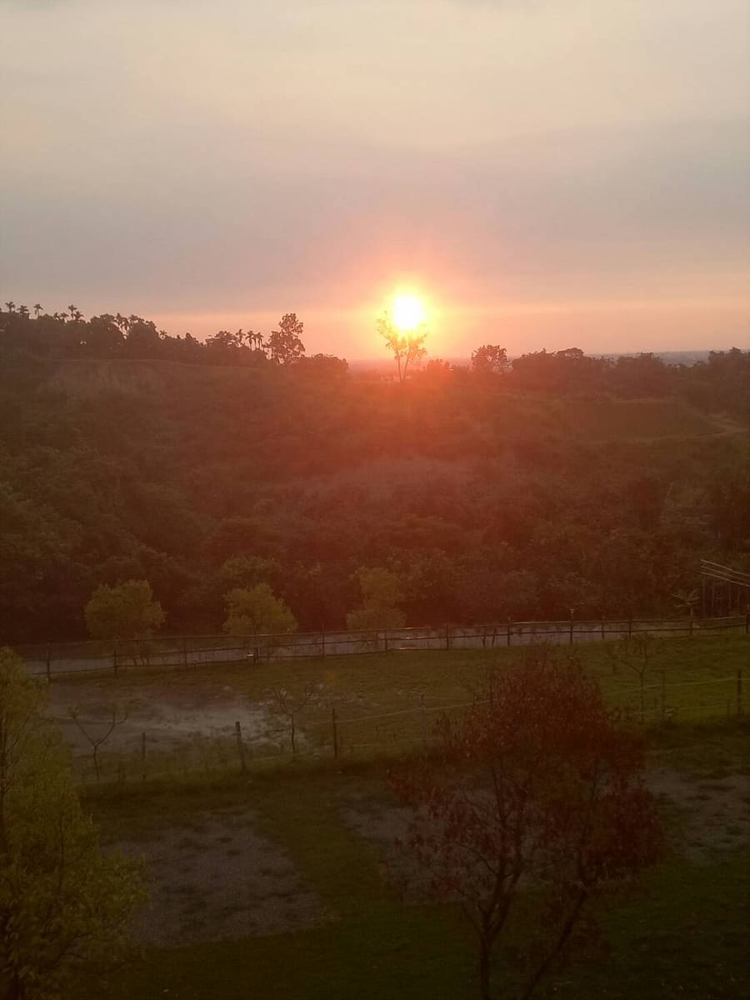

吉恩典山丘原是父親於此地從事農業以及養殖雞禽的基地，除了父親曾在此打拼事業、為家庭奉獻之外，更乘載著自己兒時曾於山地遊玩的美好記憶。然而因著父親逐漸老邁，無力管理整片山地後，便荒廢了數年之久。
而營主本身經營材料行，事業逐漸穩定後，因著自己熱情好客的性格，讓營主興起改造此地的想法，原先用意是供三五好友能於假日至郊區一起相聚、談天說地的世外桃源，以及打造一處可供父親晚年休憩的庭園。因著這樣的起心動念，逐漸有了吉恩典的雛形。
然而因此地距離市區僅十來分鐘，以及地勢能眺望嘉義市夜景，鬧中取靜、交通便利的特色，在好友的建議以及營主想推廣嘉義的特色觀光下創立了吉恩典山丘露營區。
而取名吉恩典是為了感念上蒼的「恩典」以及祖輩所傳承下來的寶地，「吉」除了蘊含此地為吉祥的寶地外，更希望能夠匯「集」來自五湖四海的遊客，讓前來嘉義觀光的遊客能有個便利的休憩中繼站，一睹嘉南地區的美麗風光。



吉恩典山丘，吉祥恩典之秘境，坐落於市區附近的小郊山，為暢遊嘉義市區首選，還可眺望嘉義市夜景，交通便利補給方便，全家全聯就在路上。新手初露友善營地。
鄰近國道3號可往中埔、阿里山，以及東西向82快速道路可至東石、布袋，嘉義山光水色市景各種玩法由此出發，任君選擇。
適合週末假期輕旅行，邀請您一起在這鬧中取靜的世外桃源放鬆身心，與三五好友一起度過美好假期。